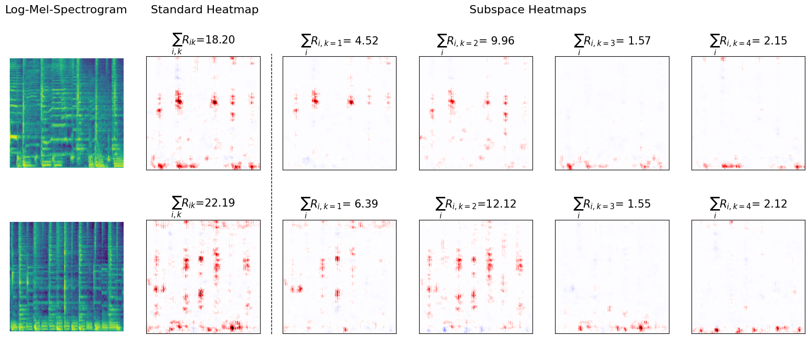

Provided are two exemplary samples of reggae music along with the exrtacted explanations. The standard heatmap specifies the local explanation
as obtained with standard LRP. The subspace heatmaps represent the disentangled explanation-components as extracted with DRSA and LRP. In order
to enable good visual inspection, the icons to play the associated audios are provided beneath the figures in the same exact order as the
images in the figure.

Fig. 1: Displayed from left to right: the original sample, the standard explanation (as obtained with standard LRP),
and 4 explanation components as disentangled with DRSA. The total relevance \(\sum R\) represented by an explanation is stated above
each heatmap. Each row of figures represents one specific sample and its associated explanations.